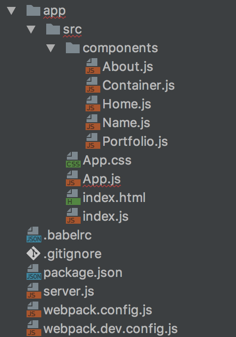
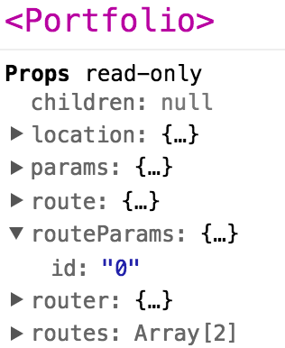
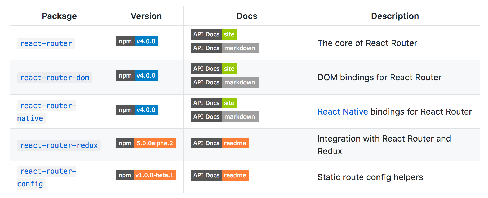
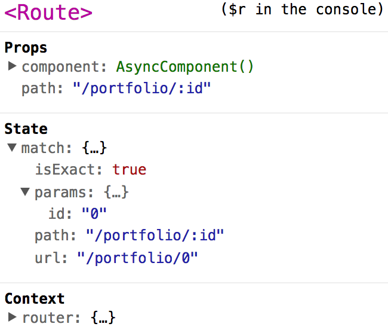

들어가기에 앞서
React Router v4가 정식으로 나와서 3은 deprecated 된 거나 마찬가지라고 본다.~
현재 React Router v3은 디프리케잇 되지 않고 React Router v4와 다른 노선을 탔을 뿐, 지원은 계속 해주는 것 같다.
따라서 레거시 환경을 싫어하기도 해서 한 번 마이그레이션을 간단하게 해보았다.
기본적으로 웹팩, 바벨, 리액트 라우터 등등은 안다는 전제 하에 글을 썼다.
웹팩 2에 대한 모르는 부분은 아래 글을 조금씩 참조하면 도움이 될 것이다.
v3으로 만들어보기
소스 코드는 정재남 님께서 제공해주신 소스를 이용했다.
v3으로 만든 라이브 데모에서 직접 내용을 확인해보고 시작하자.
혹시 만들기 귀찮거나 중간중간 확인할 사람은 소스 코드를 보도록 하자.
서버는 없으니 새로고침을 하면 제대로 정보를 표시 못 하지만, 우리가 실제 진행할 때는
Node.js의 express 프레임워크를 사용해서 새로고침을 해도 제대로 작동하게 만들 것이다.
전체적인 프로젝트 구조는 다음과 같다.

일단 packge.json 파일을 만들고 다음 패키지들을 설치하자.1
2npm i -D babel-core babel-loader babel-plugin-syntax-dynamic-import babel-preset-env babel-preset-react webpack-dev-server
npm i -S express html-webpack-plugin react react-dom react-router@^3.x webpack
babel-plugin-syntax-dynamic-import는 코드 스플리팅을 위해 추가한 플러그인이다.
.babelrc 파일을 만들고 아래와 같이 적어주자.1
2
3
4
5
6
7
8
9
10
11
12
13
14
15
16{
"presets": [
[
"env",
{
"browsers": ["last 2 versions", "> 10%", "ie 9"],
// tree shaking
"modules": false
}
],
"react"
],
"plugins": [
"syntax-dynamic-import"
]
}
presets 부분이 요상하게 적혀있는데 트리 쉐이킹을 위한 것이니 모르는 사람은
(Webpack 2) 트리 쉐이킹을 해보자!을 참조하자.
이제 컴포넌트들을 하나 하나 작성해보자.
1 | // About.js |
1 | // Container.js |
1 | // Home.js |
1 | // Name.js |
1 | // Portfolio.js |

id는 추후에 우리가 정할 파라미터이다.
1 | // App.js |
component 대신에 getComponent를 써서 코드 스플리팅을 하였다.
또한 그 안에 import(component)와 같은 구문 때문에babel-plugin-syntax-dynamic-import를 쓰게 된 거다.
혹시 코드 스플리팅에 대해 잘 모르는 사람은 (Webpack 2) 코드를 분할해보자!를 봐보자.
1 | // index.js |
마지막으로 index.html도 만들어주자.1
2
3
4
5
6
7
8
9
10
11
12
<html lang="ko">
<head>
<meta charset="UTF-8" />
<meta name="viewport" content="width=device-width, initial-scale=1.0, maximum-scale=1.0, user-scalable=0" />
<title>Title</title>
</head>
<body>
<div id="app">
</div>
</body>
</html>
이제 웹팩의 개발용 설정 파일을 작성하자.1
2
3
4
5
6
7
8
9
10
11
12
13
14
15
16
17
18
19
20
21
22
23
24
25
26
27
28
29
30
31
32
33
34
35
36
37
38
39
40
41
42
43
44
45
46
47
48
49
50
51
52
53
54// webpack.dev.config.js
const webpack = require('webpack');
const {resolve} = require('path');
const HtmlWebpackPlugin = require('html-webpack-plugin');
const PORT = 3001;
const ROOT = './app/src';
module.exports = {
devtool: 'inline-source-map',
entry: [
`webpack-dev-server/client?http://localhost:${PORT}`,
// bundle the client for webpack-dev-server
// and connect to the provided endpoint
'webpack/hot/only-dev-server',
// bundle the client for hot reloading
// only- means to only hot reload for successful updates
resolve(ROOT, 'index')
// the entry point of our app
],
output: {
publicPath: '/',
filename: 'bundle.js',
},
plugins: [
new webpack.HotModuleReplacementPlugin(),
// enable HMR globally
new webpack.NamedModulesPlugin(),
// prints more readable module names in the browser console on HMR updates
new HtmlWebpackPlugin({
template: `${ROOT}/index.html`
})
],
module: {
rules: [{
test: /\.js$/,
use: ['babel-loader'],
exclude: /node_modules/,
}]
},
devServer: {
hot: true,
inline: true,
port: PORT,
historyApiFallback: true,
contentBase: ROOT
}
};
process.noDeprecation = true;
이제 배포용 웹팩 설정 파일을 작성하자.1
2
3
4
5
6
7
8
9
10
11
12
13
14
15
16
17
18
19
20
21
22
23
24
25
26
27
28
29
30
31
32
33
34
35
36
37
38
39
40
41
42
43
44
45
46
47
48
49
50
51
52
53
54
55
56
57
58
59
60
61
62
63
64
65
66// webpack.config.js
;
const webpack = require('webpack');
const {resolve} = require('path');
const HtmlWebpackPlugin = require('html-webpack-plugin');
const ROOT = './app/src';
const DIST = 'app/dist';
module.exports = {
entry: {
app: ROOT + '/index.js',
},
output: {
filename: '[name].[chunkhash].js',
path: resolve(__dirname, DIST),
publicPath: '/'
},
plugins: [
new webpack.LoaderOptionsPlugin({
minimize: true
}),
new webpack.optimize.UglifyJsPlugin({
compress: {
warnings: false, // 터미널 창에 출력되는 게 보기 귀찮아서 추가.
unused: true // tree shaking
}
}),
new webpack.optimize.CommonsChunkPlugin({
name: 'vendor',
// 아래 부분이 핵심
minChunks: function (module) {
// this assumes your vendor imports exist in the node_modules directory
return module.context && module.context.indexOf('node_modules') !== -1;
}
}),
new webpack.DefinePlugin({
'process.env': {
NODE_ENV: JSON.stringify('production')
}
}),
new HtmlWebpackPlugin({
template: './app/src/index.html',
minify: {
collapseWhitespace: true,
conservativeCollapse: true,
keepClosingSlash: true,
removeComments: true,
removeRedundantAttributes: true,
removeScriptTypeAttributes: true,
removeStyleLinkTypeAttributes: true
}
})
],
module: {
rules: [{
test: /\.js$/,
use: ['babel-loader'],
exclude: /node_modules/,
}]
}
};
process.noDeprecation = true;
chunkhash가 뭔지 모르는 사람도 역시 (Webpack 2) 코드를 분할해보자!를 봐보자.
이제 배포용 파일을 테스트 하기 위해 express 프레임워크를 써서 서버 설정 파일을 작성하자.1
2
3
4
5
6
7
8
9
10
11
12
13
14
15
16// server.js
const express = require('express');
const app = express();
const PORT = 3000;
const DIST = `${__dirname}/app/dist/`;
// server-open
app.use('/', express.static(DIST));
app.listen(PORT, () => {
console.log('Express listening on port', PORT);
});
// client router
app.get('*', (req, res) => {
res.sendFile(DIST);
});
작업을 편안하게 하기 위해 packge.json의 npm script를 수정해보자.1
2
3
4
5
6
7{
"scripts": {
"test": "echo \"Error: no test specified\" && exit 1",
"start": "./node_modules/webpack-dev-server/bin/webpack-dev-server.js -d --config webpack.dev.config.js",
"build": "rm -rf app/dist && node_modules/webpack/bin/webpack.js && node server"
}
}
- npm start라고 치고 http://localhost:3001/에 접속하면 개발용 버전으로 볼 수 있고(소스맵, 리액트 개발 도구)
- npm build라고 치고 http://localhost:3000/에 접속하면 배포용으로 볼 수 있다. (소스맵 X, 리액트 개발 도구 X)
윈도우 유저는 rm -rf에 해당하는 다른 명령어로 build 스크립트를 수정해야할 것이다.
리액트 라우터 v4로 마이그레이션 하기
리액트 라우터 v3로 만드는 것도 좀 귀찮았는데 아직 마이그레이션은 시작도 하지 않았다.
리액트 라우터 v4에서는 바뀐 게 참 많아서… 수정해야할 부분이 참 많다.
혹시 따라하기 귀찮거나 중간 중간 확인하고 싶은 사람은 소스 코드를 확인하자.

v3 때는 react-router 하나 밖에 못 봤던 것 같은데… 5개나 됐다.
대표적으로 react-router, react-router-dom, react-router-native만 알아봤다.
- react-router = react-router-dom + react-router-native
- react-router-dom = Web 용 react-router
- react-router-native = App 용 react-router
나는 웹을 주로 사용하니 react-router-dom v4로 설치하자.1
2npm un -S react-router
npm i -S react-router-dom
Container.js를 Menu.js로 이름을 바꾼 후 다음과 같이 수정하자.1
2
3
4
5
6
7
8
9
10
11
12
13
14
15
16
17
18
19
20
21
22
23// v4로 오면서 컨테이너로써의 기능을 상실하게 된다.
// 즉 Route 컴포넌트는 자식을 가질 수 없게 됐다.
import React from 'react/lib/React';
import Link from 'react-router-dom/es/Link';
const Menu = () => (
<div>
<header>
<ul>
<li><Link to="/">Home</Link></li>
<li><Link to="/about">About</Link></li>
<li><Link to="/about/name">About - Name</Link></li>
<li><Link to="/about/redirect0">About - RedirectTo: Portfolio #0</Link></li>
<li><Link to="/about/redirect1">About - RedirectTo: Portfolio #1</Link></li>
<li><Link to="/portfolio">Portfolio - All</Link></li>
<li><Link to="/portfolio/0">Portfoilo - #0</Link></li>
<li><Link to="/portfolio/1">Portfoilo - #1</Link></li>
</ul>
</header>
</div>
);
export default Menu;
1 | // Portfolio.js |

App.js가 가장 수정 사항이 많다…
나도 원리 보다는 사용방법 위주로 익혔으니 자세한 내용은 공식 사이트를 참조하자.1
2
3
4
5
6
7
8
9
10
11
12
13
14
15
16
17
18
19
20
21
22
23
24
25
26
27
28
29
30
31
32
33
34
35
36
37
38
39
40
41
42
43
44
45
46
47
48
49
50
51
52
53
54
55
56
57
58
59
60
61
62
63
64
65
66
67
68
69
70
71
72
73
74
75// App.js
import React, {Component} from 'react/lib/React';
// import { BrowserRouter, HashRouter, Route, Redirect, Switch } from 'react-router-dom';
// 리액트 라우터를 코드 스플리팅 하려면 위 코드를 이렇게 하나씩 불러와야한다 귀찮 ㅠ
import BrowserRouter from 'react-router-dom/es/BrowserRouter';
import HashRouter from 'react-router-dom/es/HashRouter';
import Route from 'react-router-dom/es/Route';
import Redirect from 'react-router-dom/es/Redirect';
import Switch from 'react-router-dom/es/Switch';
import Menu from './components/Menu';
// HTML5 History API 지원여부 파악
const isBrowserHistory = history.pushState;
const Router = isBrowserHistory ? BrowserRouter : HashRouter;
// 리액트 라우터 4에서 코드 스플리팅 하기.
// getComponent is a function that returns a promise for a component
// It will not be called until the first mount
const asyncComponent = getComponent => (
class AsyncComponent extends Component {
constructor() {
super();
this.state = {Component: AsyncComponent.Component};
}
componentWillMount() {
if (!this.state.Component) {
getComponent().then(Component => {
AsyncComponent.Component = Component;
this.setState({Component});
});
}
}
render() {
const {Component} = this.state;
if(Component) {
return <Component {...this.props} />;
}
return null;
}
}
);
const About = asyncComponent(() => import('./components/About').then(module => module.default));
const Home = asyncComponent(() => import('./components/Home').then(module => module.default));
const Name = asyncComponent(() => import('./components/Name').then(module => module.default));
const Portfolio = asyncComponent(() => import('./components/Portfolio').then(module => module.default));
const App = () => (
// v3에는 Router 속성에 browserRouter or hashRouter가 들어갔는데,
// v4에는 BrowserRouter or HashRouter가 Router까지 포함한다.
// 또한 Router 안에는 하나의 컴포넌트만 들어가야한다.
// 따라서 div 같은 컴포넌트로 그 안을 한 번 감싸줘야한다.
// 또한 IndexRoute는 Route 컴포넌트의 exact라는 속성으로 대체되었다.
// Redirect 컴포넌트는 Switch 컴포넌트로 감싸줘야 정상 작동한다.
// 또한 파라미터는 괄호를 써서 생략 가능하던 것이 불가능해졌다.
<Router>
<div>
<Menu/>
<Route exact path="/" component={Home} />
<Route path="/about" component={About} />
<Route path="/about/name" component={Name} />
<Switch>
<Redirect to="/portfolio/0" from="/about/redirect0"/>
<Redirect from="/about/redirect1" to="/portfolio/1"/>
</Switch>
<Route exact path="/portfolio" component={Portfolio} />
<Route path="/portfolio/:id" component={Portfolio} />
</div>
</Router>
);
export default App;
이렇게 하면 일단 내가 먼저 react-router v3으로 작성했던 내용들은 마이그레이션 됐다.npm start와 npm build를 통해 확인해보자.
더 자세한 사용 방법들은 무조건 공식 사이트를 참조하자.
그리고 여기서 끝난 게 아니다.
리액트 라우터 4는 리액트 핫 로더와도 문제가 있어서 리액트 핫 로더 3에서 해결했다고는 하지만…
이 또한 어느 정도 문제가 존재해 추후에 해당 내용을 다뤄봐야겠다.